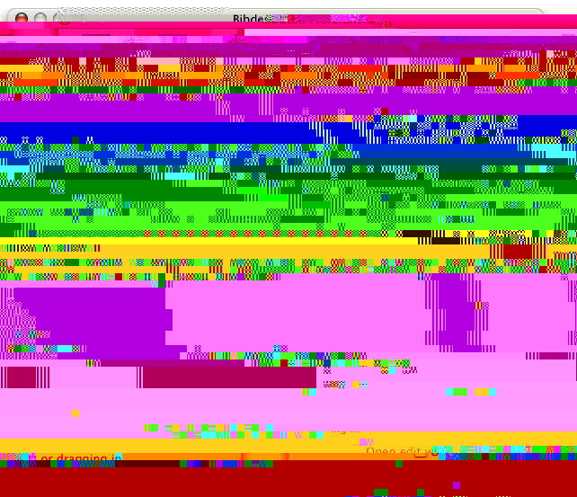
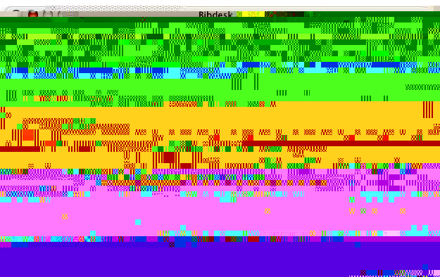
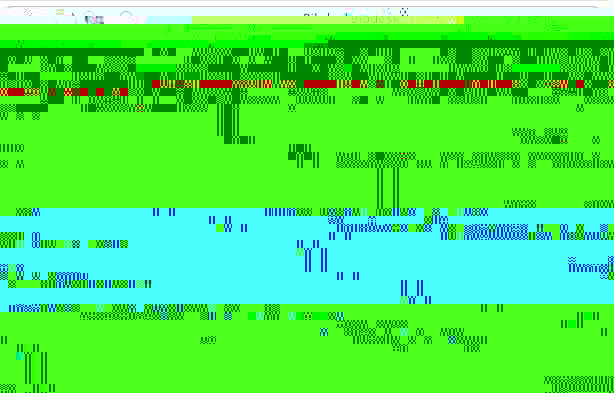
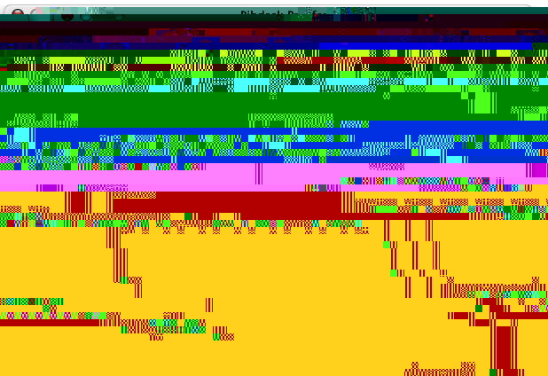

Preferences
Startup
This panel controls what BibDesk does when it starts up. Clicking the ‘Open this bibliography’ radio button prompts you to choose a default bib file to open. Clicking the ‘Display errors panel for warnings’ causes the Error panel to be shown at startup (see Getting help for information on the Error panel).
Citation

Copying and Dragging Out
This controls what gets dropped (or copied) on a drag (or copy).- BibTeX entry means the whole entry like: @misc{key, author="", ... , .... }.
- TeX Citation means: \cite{cite-key}
- PDF Description means essentially the contents of the Preview pane as a page of PDF.
- Separate citations lets you choose whether to have bibdesk drop strings like \cite{key1,key2} or \cite{key1} \cite{key2} when multiple items are involved.
- The citation text field lets you change the string that is used when dragging from the publications table to whatever you like (e.g. citep or citet ...)
- Bracket Style lets you choose to use square brackets for copy/paste and dragging citations, for compatibility with ConTeXt.
Custom Citation Drawer
This allows you to enter further strings that you can access via dragging from the custom citation strings drawer. This drawer lets you drag the selected publications from the publications table, using a different citation string.
Pasting and dragging in
‘Open edit window when paste/dragging in’ lets you decide whether to always immediately open the edit window for an item you have pasted or dragged in.Preview

Use TeX for Previewing
(More appropriately, use pdftex for previewing.) If this is checked, the preview pane will be drawn.
TeX Options
The style file (just the name, not the whole path) can be specified here. Also, the TeX and BibTeX program paths can be changed here, so you are not tied to one distribution of TeX.Display
Publications Table
Here you can select what font to use for the table.
Browser preview pane
Select what you want the lower pane of the main browser window to show.AutoFile
Sorry, the AutoFile pane is a teaser for right now. In the future, it will contain settings to allow you to automatically manage local copies of papers.
Default Fields

BibTeX Fields
You can set fields to be added to publications by default here. They are added when a file is opened and if a new publication is made.
Template File
Clicking this button sends you to TextEdit to change the template file that is added to the beginning of every saved bib file. This template file is a great place to put your macros, copyright info (if applicable), or shameless plugs for your software :)RSS
Hopefully this panel is self explanatory. If you click on the ‘Find out more...’ link, your favorite web browser will open the page http://www.cs.ucsd.edu/~mmccrack/AboutRSS.html. The RSS publishing preferences control the RSS export features. If you check ‘Automatically save RSS feeds’, everytime you save a .bib file, a correspondingly named .rss file will be saved in the same directory. The ‘description’ field in RSS is the text that shows up as the headline of each item in the RSS feed. See the link for more details.